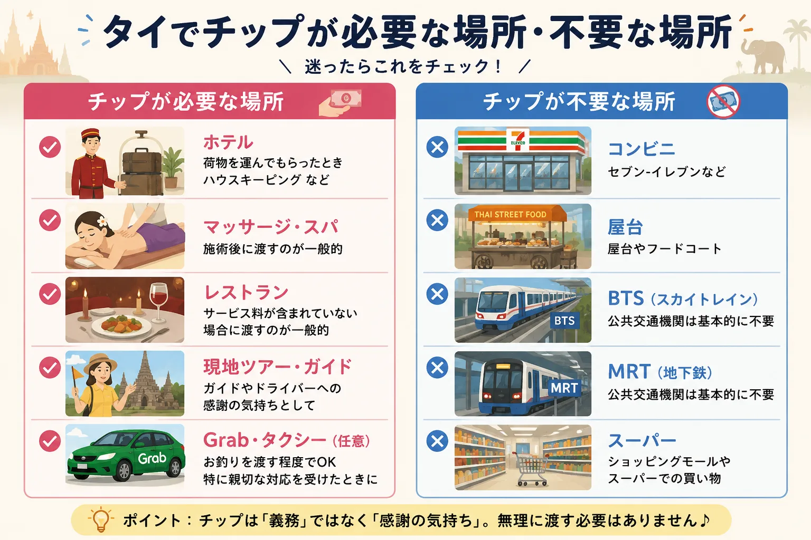
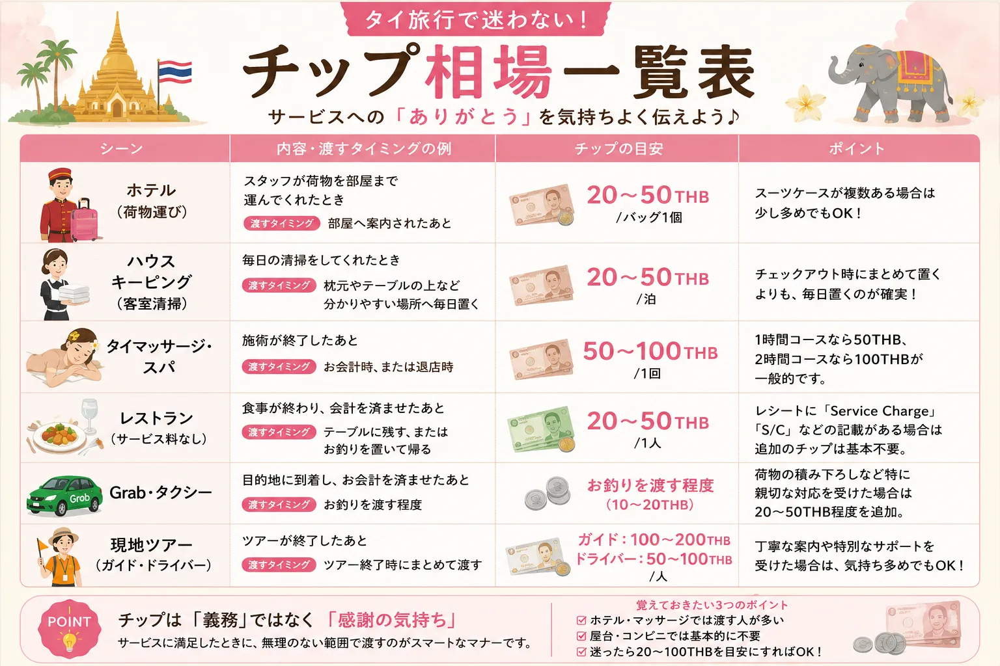
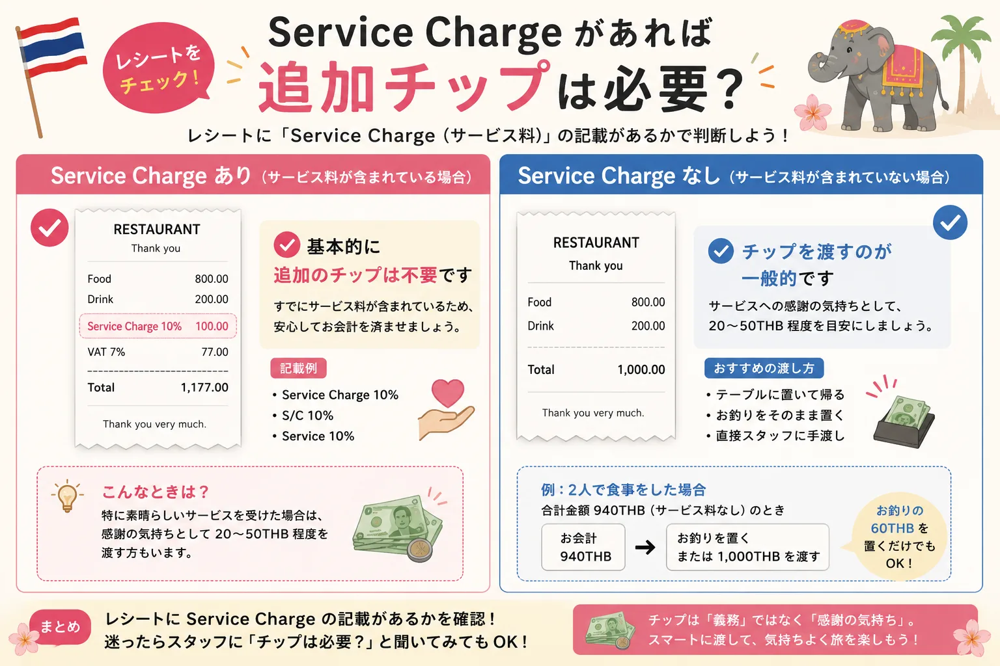
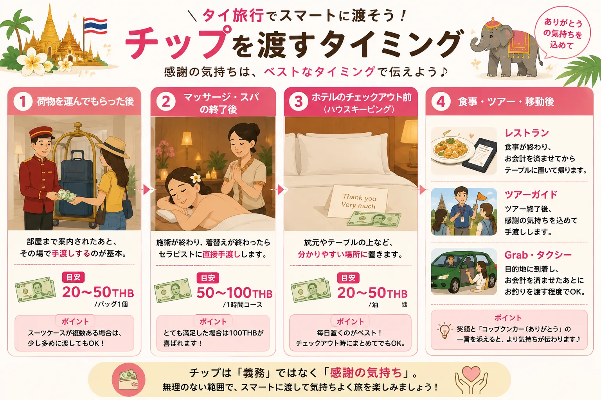
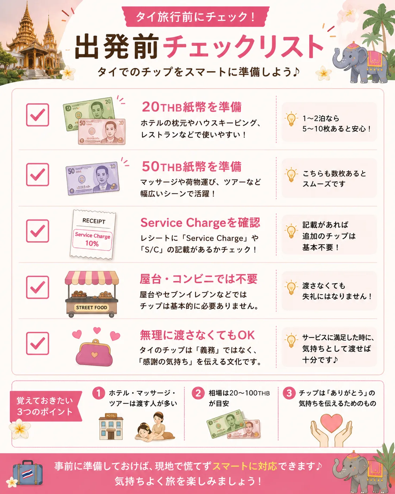

「タイってチップが必要なの？」と迷う方へ
初めてタイへ旅行する方が、意外と悩むのがチップ文化です。
日本ではチップを渡す習慣がないため、「渡さないと失礼になる？」「いくら渡せばいいの？」と不安に感じる方も多いでしょう。
この記事では、タイでチップを渡す場面、渡さなくても良い場面、相場の目安、旅行者が迷わないポイントを分かりやすく解説します。
結論｜タイのチップは「義務ではない」がマナーとして定着している
まず覚えておきたいのは、タイにはチップ文化がありますが、強制ではないということです。
欧米のように「必ず何％払う」というルールではなく、良いサービスを受けたら感謝の気持ちとして渡す、という考え方です。そのため、渡さなかったから怒られたり、サービスを拒否されたりするケースは基本的にありません。
ただし、ホテルスタッフやマッサージ店などでは、チップを受け取ることを前提としている場合もあります。20THB・50THBなどの少額紙幣を用意しておくと安心です。
旅行者が覚えるべきポイントはたった3つ
- ホテル・マッサージでは渡す人が多い
- 屋台・コンビニでは不要
- 迷ったら20〜100THB程度を目安にすればOK
現金の準備量に迷う方は、タイ旅行で現金はいくら必要？もあわせて確認しておくと、小額紙幣の用意までイメージしやすくなります。
なぜタイにはチップ文化があるの？
日本ではチップを渡す習慣はありません。一方、タイは世界中から多くの旅行者が訪れる観光大国です。欧米からの旅行者も多く、ホテルや観光業では自然とチップ文化が定着しました。
また、タイではサービス業のスタッフがチップを収入の一部として考えているケースもあります。良い接客を受けた際に少額のチップを渡すことは、お互いに気持ちの良いコミュニケーションにもつながります。
もちろん、サービスに満足できなかった場合まで無理に渡す必要はありません。
チップが必要な場面

旅行中にチップを渡す機会が多いのは、次のようなシーンです。
- ホテルで荷物を運んでもらったとき
- 客室清掃（ハウスキーピング）
- タイマッサージ・スパ
- レストラン（サービス料が含まれていない場合）
- 現地ツアー
- Grab・タクシーで特別な対応をしてもらった場合
すべての場面で必須ではありませんが、サービスへの感謝を伝えたいときに渡すのが一般的です。
シーン別｜タイ旅行でのチップ相場一覧
「結局いくら渡せばいいの？」と迷う方は、まず相場を一覧で確認しましょう。

| シーン | チップの目安 |
|---|---|
| ホテル（荷物運び） | 20〜50THB |
| ハウスキーピング | 20〜50THB／泊 |
| タイマッサージ・スパ | 50〜100THB |
| レストラン（サービス料なし） | 20〜50THB |
| Grab・タクシー | お釣りを渡す程度（10〜20THB） |
| 現地ツアーガイド | 100〜200THB |
| 専属ドライバー | 50〜100THB |
金額はあくまで目安です。サービス内容や満足度に応じて調整しましょう。
ホテル
荷物を運んでもらったとき
ホテルスタッフが部屋まで荷物を運んでくれた場合は、20〜50THB程度を渡す旅行者が多く見られます。スーツケースが複数ある場合は、少し多めでも問題ありません。
ポイント：部屋へ案内されたあと、その場で紙幣を手渡しすればOKです。
客室清掃（ハウスキーピング）
毎日清掃してもらうホテルでは、20〜50THB程度を枕元やテーブルの上など、分かりやすい場所へ置いておくのが一般的です。
チェックアウト時にまとめて置くよりも、毎日置く方がスタッフへ確実に渡ります。
タイマッサージ・スパ
旅行中に最もチップを渡す機会が多いのがマッサージです。相場は50〜100THBが一般的です。
- 1時間300THBのマッサージ：50THB
- 2時間コース：100THB程度
もちろん義務ではありませんが、丁寧な施術や満足度が高かった場合には、感謝の気持ちとして渡すと喜ばれます。
レストラン

まず確認したいのがレシートです。「Service Charge 10%」または「S/C」と記載がある場合は、サービス料が含まれているため追加のチップは基本的に不要です。
一方で、サービス料が含まれていない場合は、20〜50THB程度をテーブルへ残すか、お釣りを置いて帰る人が多いでしょう。高級レストランでは、サービス内容に応じて少し多めに渡すケースもあります。
Grab・タクシー
タイでは、Grabやタクシーはチップ必須ではありません。
- 190THB → 200THB渡す
- 285THB → 300THB渡す
このように、お釣りをそのまま渡す程度で十分です。大きな荷物の積み下ろしを手伝ってもらった場合や、特に親切な対応を受けた場合は、20〜50THB程度を追加すると感謝の気持ちが伝わります。
現地ツアー
アユタヤツアーや水上マーケットツアーなどでは、ガイドやドライバーへチップを渡す旅行者も少なくありません。
- ガイド：100〜200THB
- ドライバー：50〜100THB
写真撮影を手伝ってくれたり、丁寧な案内をしてくれたりした場合は、旅行の思い出への感謝として渡すと良いでしょう。
チップが不要な場面
一方で、次のような場所では基本的にチップは必要ありません。
- コンビニ（セブン-イレブンなど）
- 屋台
- フードコート
- BTS（スカイトレイン）
- MRT（地下鉄）
- スーパー
- 一般的なショッピングモール
旅行初心者の方は「タイでは何でもチップが必要」と思いがちですが、実際にはそうではありません。迷った場合は、「サービスを受けたかどうか」を一つの判断基準にすると分かりやすいでしょう。

よくある質問（FAQ）
Q. 日本円でチップを渡してもいいですか？
基本的にはおすすめできません。タイではタイバーツ（THB）で渡すのがマナーです。日本円は現地スタッフがそのまま使えず、両替の手間もかかります。
旅行中は20THB・50THBの紙幣を数枚用意しておくと安心です。両替方法はタイの両替は日本と現地どちらがお得？でも詳しく整理しています。
Q. コインでも大丈夫？
少額であれば問題ありません。ただし、旅行者は20THB紙幣を渡すケースが多く、受け取る側にとっても使いやすいため、紙幣を準備しておくことをおすすめします。
Q. Grabはチップを払わないと評価が下がりますか？
いいえ。チップを渡さなくても評価が下がることは基本的にありません。ドライバーが親切だったり、荷物を運んでくれたりした場合に、感謝の気持ちとして追加する程度で十分です。
Q. サービス料（Service Charge）がある場合もチップは必要？
基本的に不要です。レシートにService Charge、S/C、Service 10%などの記載がある場合は、サービス料が含まれています。特別に素晴らしい接客を受けた場合のみ、追加で少額を渡す旅行者もいます。
Q. チップ用にいくら両替しておけば安心？
2泊3日〜3泊4日程度の旅行なら、200〜500THB程度を20THB・50THB紙幣で用意しておくと、ほとんどの場面に対応できます。ホテルやマッサージを数回利用する予定でも、この程度あれば十分なケースが多いでしょう。
タイ旅行でチップを渡すコツ
チップは「義務」ではなく、「ありがとう」を伝えるための文化です。そのため、無理に高額を渡す必要はありません。
- ホテルやマッサージでは20〜100THBが目安
- 屋台やコンビニでは基本的に不要
- サービス料が含まれているレストランでは追加のチップは不要
このポイントを知っておくだけで、初めてのタイ旅行でも安心して過ごせます。カード払いとの使い分けはタイでクレジットカードは使える？も参考になります。

まとめ
タイにはチップ文化がありますが、欧米のように必ず支払わなければならないものではありません。
旅行者にとって大切なのは、「感謝を伝えたい」と思ったときに、無理のない範囲で渡すことです。
旅行前には20THB・50THBの小額紙幣を数枚準備しておくと、ホテルやマッサージなどで慌てずに対応できます。チップのルールを知っておけば、現地で戸惑うことなく、より気持ちよくタイ旅行を楽しめるでしょう。